Isla Pariti
Département de La Paz · Culture et histoire
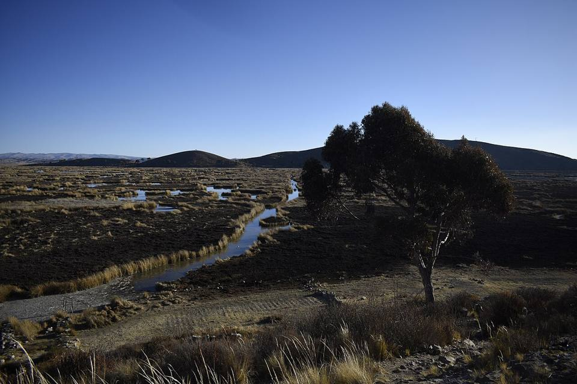
Pariti est une petite île tranquille du Lago Menor. En 2004, des archéologues y ont découvert un ensemble exceptionnel de céramiques de la culture Tiwanaku, aujourd'hui exposé dans le petit musée de la communauté. On y vient en barque pour ce musée unique, l'ambiance paisible et les vues sur la cordillère.
3 810 maltitude
0 à 1 joursur place
Haute altitude. Au-dessus de 3 500 m, le mal des montagnes (soroche) est fréquent. Arrivez progressivement, buvez beaucoup et ralentissez le premier jour.
À faire
- Musée communautaire de céramiques de Tiwanaku
- Promenade sur l'île
- Vue sur la Cordillère Royale
À goûter
- TruiteTruite du lac Titicaca ou des rivières de la Cordillère, frite ou grillée, avec riz, frites et salade. On la mange sur la plage de Copacabana et dans les petits restaurants des villages de montagne.
- Ispi et pejerreyPetits poissons du lac frits et croustillants, à manger entiers avec un peu de citron.
Conseil. En barque depuis Huatajata ou Quehuaya. Pas d'horaires fixes : demandez à la communauté d'ouvrir le musée.
Comment aller à Isla Pariti
Huatajata Bateau · environ 1 h
Barque à moteur depuis Huatajata ou Quehuaya.
Photos de Isla Pariti
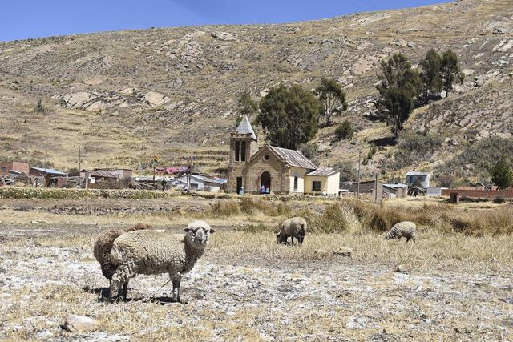

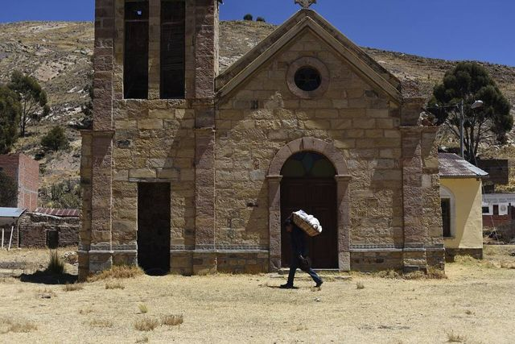

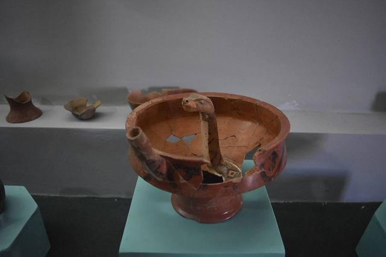

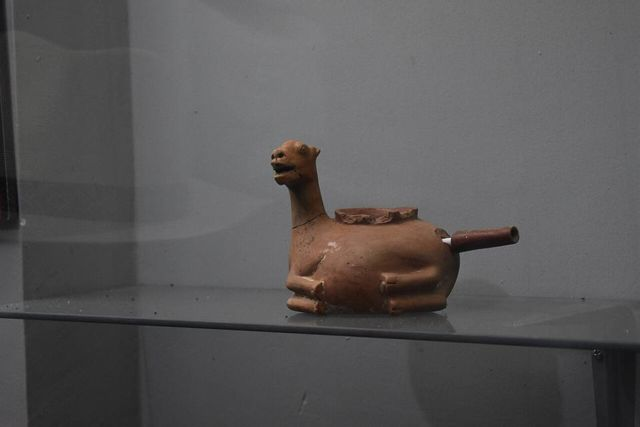

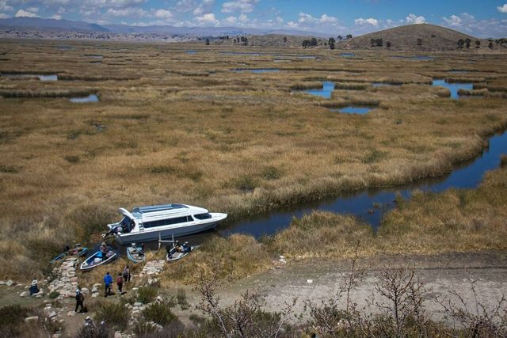

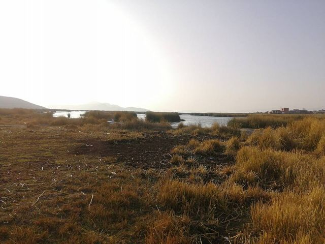

Autres lieux de la région
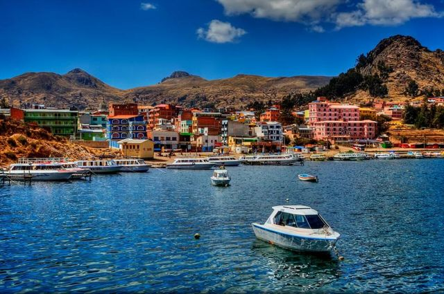
Copacabana (lac Titicaca)Petite ville au bord du lac Titicaca, porte d'entrée vers l'Isla del Sol.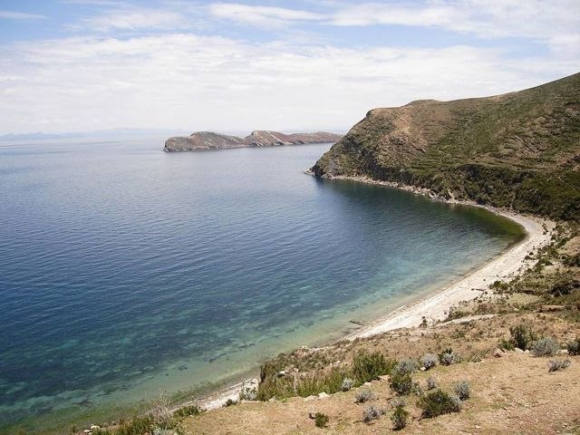
Isla del SolÎle sacrée des Incas : sentiers, ruines et vues sur la Cordillère Royale.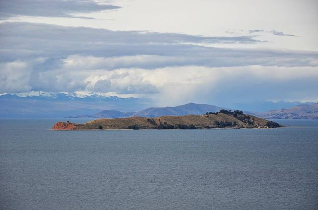
Isla de la LunaPetite île voisine avec le temple des Vierges du Soleil (Iñak Uyu).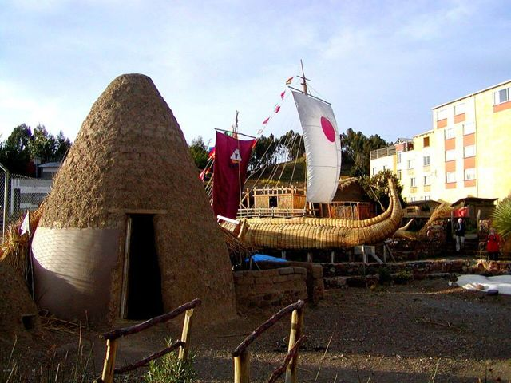
HuatajataVillage du lac Titicaca, berceau des bateaux de roseau (totora).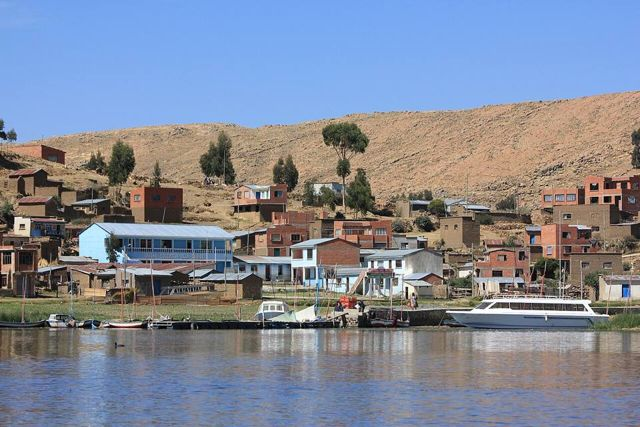
Île de SurikiL'île des constructeurs de bateaux en roseau, dont ceux de l'expédition Ra II.